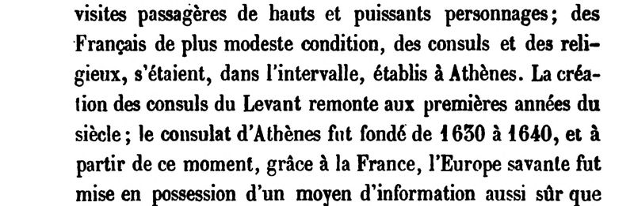
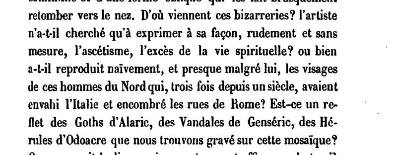
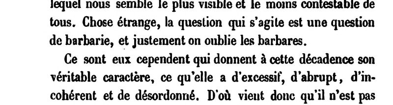

The French consuls at Athens (p. 94)
French: Paris 1864, vol. I, p. 94, scan n126.

… Frenchmen of humbler station, consuls and religious, had meanwhile settled at Athens. The creation of the consuls of the Levant goes back to the first years of the century; the consulate of Athens was founded between 1630 and 1640, and from that moment, thanks to France, learned Europe was given a means of information as sure as it was convenient, which in two hundred years has never failed it.
Original French
… des Français de plus modeste condition, des consuls et des religieux, s’étaient, dans l’intervalle, établis à Athènes. La création des consuls du Levant remonte aux premières années du siècle; le consulat d’Athènes fut fondé de 1630 à 1640, et à partir de ce moment, grâce à la France, l’Europe savante fut mise en possession d’un moyen d’information aussi sûr que commode, qui, depuis deux cents ans, ne lui a jamais fait défaut.
Lecky’s note 76 (“a French consulate was formed about 1630”) matches.
Vitet’s question: asceticism or the northern invaders? (p. 245)
French: Paris 1864, vol. I, “Les mosaïques chrétiennes de Rome”, p. 245, scan n277, on the apse mosaic of Saints Cosmas and Damian.

… Where do these oddities come from? Did the artist seek only to express in his own way, roughly and without measure, asceticism, the excess of the spiritual life? Or did he reproduce naively, and almost in spite of himself, the faces of those men of the North who three times in a century had invaded Italy and crowded the streets of Rome? Is it a reflection of Alaric’s Goths, Genseric’s Vandals, Odoacer’s Heruli that we find engraved on this mosaic? One cannot say …
Original French
… D’où viennent ces bizarreries? l’artiste n’a-t-il cherché qu’à exprimer à sa façon, rudement et sans mesure, l’ascétisme, l’excès de la vie spirituelle? ou bien a-t-il reproduit naïvement, et presque malgré lui, les visages de ces hommes du Nord qui, trois fois depuis un siècle, avaient envahi l’Italie et encombré les rues de Rome? Est-ce un reflet des Goths d’Alaric, des Vandales de Genséric, des Hérules d’Odoacre que nous trouvons gravé sur cette mosaïque? On ne saurait le dire …
Vitet’s answer: “on oublie les barbares” (pp. 268–279)
French: Paris 1864, vol. I, “Les mosaïques chrétiennes de Rome”, part IV, “Fin de la décadence”, pp. 272 and 277, scans n304 and n309.

[p. 272] … Only, a third element is forgotten, which seems to us the most visible and least disputable of all. Strange to say, the question at issue is a question of barbarism, and precisely the barbarians are forgotten. Yet it is they who give this decadence its true character, all that is excessive, abrupt, incoherent and disorderly in it.
[p. 277] … the Church had preferred to shut its eyes and prudently let in, on the walls of its chapels, these coarse figures, these haggard eyes, these exaggerated expressions, these Scandinavian and Teutonic types, more or less faithful portraits of its formidable allies; and then what happened? The piety of the faithful took the new images seriously, adopted them, consecrated them …
Original French
[p. 272] … Seulement on oublie un troisième élément, lequel nous semble le plus visible et le moins contestable de tous. Chose étrange, la question qui s’agite est une question de barbarie, et justement on oublie les barbares. Ce sont eux cependant qui donnent à cette décadence son véritable caractère, ce qu’elle a d’excessif, d’abrupt, d’incohérent et de désordonné.
[p. 277] … elle [l’Église] avait mieux aimé fermer les yeux et laisser prudemment s’introduire, sur les parois de ses chapelles, ces grossières figures, ces yeux hagards, ces expressions outrées, ces types scandinaves et teutons, portraits plus ou moins fidèles de ses redoutables alliés; puis, cela fait, qu’arriva-t-il? La piété des fidèles prit au sérieux les nouvelles images, les adopta, les consacra …
Between these pages (OCR only) Vitet argues that Roman artists, “to please their new patrons, their half-savage Maecenases”, set about unlearning what they knew, and that on p. 278 “barbarism, identifying itself with holiness, soon became almost an article of faith”. His explanation is social and political: the taste of the conquerors, accepted by a Church courting their souls. Lecky’s note 59 puts the decline down to “the emaciation of extreme asceticism”, which is the possibility Vitet left open on p. 245, not the conclusion of the pages Lecky cites.
Further down the rabbit hole
Sources that Lecky cites in the notes next to the ones that cite this page.
- Raoul-Rochette, Cours d’archéologieWhy Greek statues were naked: “God is naked”, and emperors stripped for apotheosis
- Ciampini, Vetera monimentaThe saint’s halo: a sign of eternity, or a shield against pigeons?
- Didron, Iconographie chrétienneHow medieval art pictured Christ the Judge
- Hallam, Literature of Europe and Constitutional HistoryHow Lecky quotes Hallam on persecution
- Hogarth, Memoirs of the OperaLulli’s absolution and Politian’s Orfeo checked against Hogarth
- Eusebius, Life of ConstantineThe emperor’s biographer on the ban on sacrifice: with a translator’s footnote that limits it


Backlinks
Every place in Rationalism in Europe that links to this page (generated automatically when the site is built).